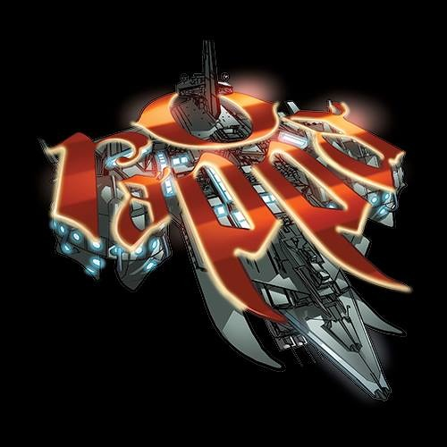

Formulário - O Rappa
Selecione seu sexo:
Qual seu álbum favorito?
Como conheceu a banda O Rappa?

Bem Vindo(a) Ao Formulário!
Obrigado por se cadastrar!
Responda as perguntas para melhor integração de todos os fâs e usuários do site!